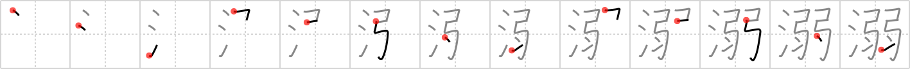

溺
← →
drowning

Reading:
On-Yomi: デキ、ジョウ、ニョウ — Kun-Yomi: いばり、おぼ.れる
Heisig story:
Water . . . weak. Do not confuse the meaning of this key word with "Drown" (Frame 763), which is closer to "founder."
Koohii stories:
1) [ikmys] 8-5-2007(90): Weak people placed in the water start drowning. Get some strength in those arms and learn how to swim!
2) [nadiatims] 24-6-2009(7): Weak people who can't hang onto the deck(DEKI) during a storm end up drowning.
3) [kanjihito] 5-5-2013(6): Darwin awards: The weakest of the weak will start drowning if put in several drops of water. (Do not confuse with drown (#707 没)).
4) [n1williams] 28-11-2009(3): After the Titanic went down in the WATER those who were WEAK soon found themselves DROWNING.
5) [kiwiburner] 7-11-2012(2): You will begin drowning if you are put in the water when you are weak.